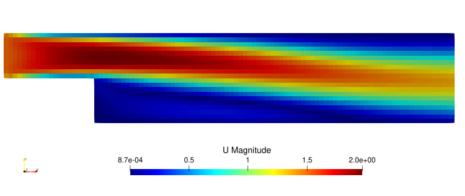

Quick Start
Read this section for information about how to install XCALibre.jl and a basic example to showcasing the main API provided
Installation
First, you need to download and install Julia in your system. Once you have a working installation of Julia, XCALibre.jl can be installed using the built in package manager.
To install XCALibre.jl directly from Github, open a Julia REPL, press ] to enter the package manager. The REPL prompt icon will change from julia> (green) to pkg> (and change colour to blue) or (myenvironment) pkg> where myenvironment is the name of the currently active Juila environment. Once in package manager mode enter
pkg> add XCALibre https://github.com/mberto79/XCALibre.jl.gitA specific branch can be installed by providing the branch name precided by a #, for example, to install the dev-0.3-main branch
pkg> add XCALibre https://github.com/mberto79/XCALibre.jl.git#dev-0.3-mainWe plan to register XCALibre.jl so that is added to the General Julia Registry. Once this has been completed, to install XCALibre.jl use the following command (in package mode as detailed above)
pkg> add XCALibreTo enable GPU acceleration you will also need to install the corresponding GPU package for your hardware. See CUDA.jl, AMD.jl, oneAPI.jl for more details. XCALibre.jl will automatically precompile and load the relevant backend specific functionality (using Julia extensions)
Example
using XCALibre
backend = CPU()
# using CUDA; backend = CUDABackend() # Uncomment and run for NVIDIA GPUs
# using AMDGPU; backend = ROCBackend() # Uncomment and run for AMD GPUs
mesh_file = pkgdir(XCALibre, "examples/2d_incompressible_laminar_backwards_step/backward_facing_step_10mm.unv")
mesh = UNV2D_mesh(mesh_file, scale=0.001)
mesh_dev = mesh # use this line to run on CPU
# mesh_dev = adapt(backend, mesh) # Uncomment to run on GPU
# flow conditions
velocity = [1.5, 0.0, 0.0]
nu = 1e-3
Re = velocity[1]*0.1/nu
# Define physics
model = Physics(
time = Steady(),
fluid = Fluid{Incompressible}(nu = nu),
turbulence = RANS{Laminar}(),
energy = Energy{Isothermal}(),
domain = mesh_dev
)
# define boundary conditions
@assign! model momentum U (
Dirichlet(:inlet, velocity),
Neumann(:outlet, 0.0),
Wall(:wall, [0.0, 0.0, 0.0]),
Wall(:top, [0.0, 0.0, 0.0]),
)
@assign! model momentum p (
Neumann(:inlet, 0.0),
Dirichlet(:outlet, 0.0),
Neumann(:wall, 0.0),
Neumann(:top, 0.0)
)
# choose discretisation schemes
schemes = (
U = set_schemes(divergence = Linear),
p = set_schemes() # no input provided (will use defaults)
)
# set up linear solvers and preconditioners
solvers = (
U = set_solver(
model.momentum.U;
solver = BicgstabSolver, # GmresSolver
preconditioner = Jacobi(),
convergence = 1e-7,
relax = 0.7,
rtol = 1e-4,
atol = 1e-10
),
p = set_solver(
model.momentum.p;
solver = CgSolver, # BicgstabSolver, GmresSolver
preconditioner = Jacobi(),
convergence = 1e-7,
relax = 0.7,
rtol = 1e-4,
atol = 1e-10
)
)
# specify runtime requirements
runtime = set_runtime(
iterations=2000, time_step=1, write_interval=2000) # -1 will not save results to file
# set up backend
hardware = set_hardware(backend=backend, workgroup=4)
# hardware = set_hardware(backend=backend, workgroup=32) # use for GPU backends
# construct Configuration object
config = Configuration(
solvers=solvers, schemes=schemes, runtime=runtime, hardware=hardware)
# Initialise fields (initial guess)
initialise!(model.momentum.U, velocity)
initialise!(model.momentum.p, 0.0)
# run simulation
Rx, Ry, Rz, Rp, model_out = run!(model, config);
println("pass") # this line is used for doctests onlyOutput
